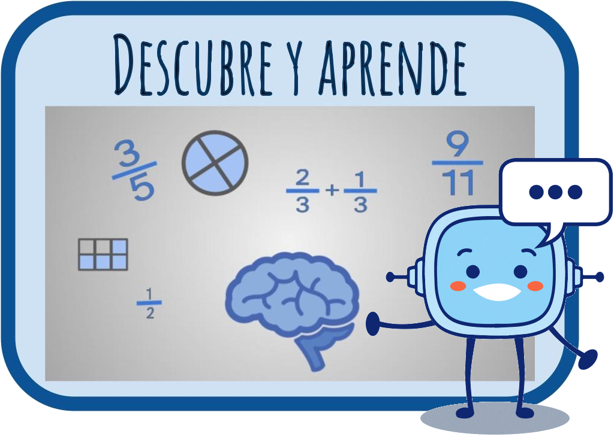

En esta fase, darás un paso adelante, aprenderás nuevos conceptos y estrategias matemáticas que te ayudarán a perfeccionar tus habilidades.
На цьому етапі ви зробите крок вперед, вивчите нові математичні концепції та стратегії, які допоможуть вам відточити свої навички.
Lectura facilitada
¿Estás listo o lista para avanzar?
En esta fase aprenderás nuevos conceptos y estrategias matemáticas.
Los nuevos aprendizajes te ayudarán a perfeccionar tus habilidades.